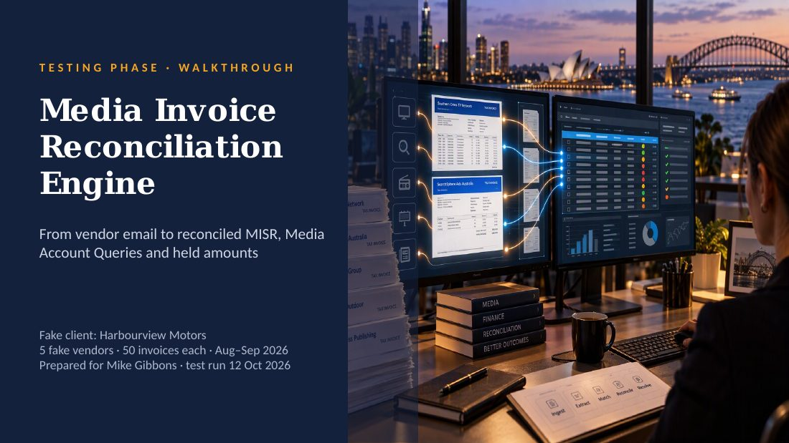

Media Invoice Reconciliation Engine
Narrated walkthrough · 18 stages · about 10 minutes · fictional test data only

Turn your sound on. All clients, vendors, people and amounts are fictitious.
Narrated walkthrough · 18 stages · about 10 minutes · fictional test data only

Turn your sound on. All clients, vendors, people and amounts are fictitious.